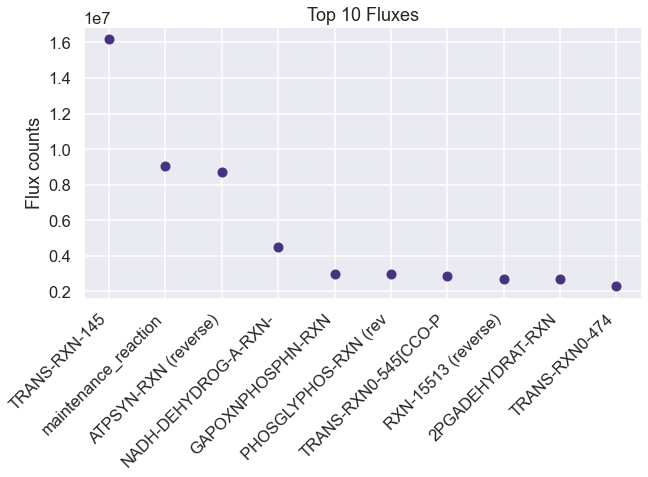

[80]:
%load_ext autoreload
%autoreload 2
import numpy as np
import seaborn as sns
import pandas as pd
import os
import matplotlib.pyplot as plt
import dill
import requests
import xmltodict
import cvxpy as cp
import itertools
from scipy.special import logsumexp
sns.set(style='darkgrid', palette='viridis', context='talk')
os.chdir(os.path.expanduser('~/vivarium-ecoli'))
from convex_kinetics_new import ConvexKineticsNew
from ecoli.processes.metabolism_redux import NetworkFlowModel, FlowResult, BAD_RXNS, FREE_RXNS
The autoreload extension is already loaded. To reload it, use:
%reload_ext autoreload
Import simulation output
Before running this, run a sim in ecoli/experiments/metabolism_redux_sim.py with -n 2 to generate a simulation output. This is necessary to replicate the simulation environment. Use the default .json config.
[81]:
time = '10'
date = '2023-04-21'
experiment = 'fba-redux'
entry = f'{experiment}_{time}_{date}'
folder = f'out/fbagd/{entry}/'
[82]:
output = np.load(folder + 'output.npy',allow_pickle='TRUE').item()
# output = np.load(r"out/geneRxnVerifData/output_glc.npy", allow_pickle=True, encoding='ASCII').tolist()
output = output['agents']['0']
fba = output['listeners']['fba_results']
mass = output['listeners']['mass']
bulk = pd.DataFrame(output['bulk'])
[83]:
f = open(folder + 'agent_steps.pkl', 'rb')
agent = dill.load(f)
f.close()
[84]:
type = 'ecoli-metabolism-redux'
if type == 'ecoli-metabolism-redux':
metabolism = agent['ecoli-metabolism-redux']
stoichiometry = metabolism.stoichiometry
stoichiometric_matrix_dict = {item["reaction id"]: item["stoichiometry"] for item in stoichiometry}
elif type == 'ecoli-metabolism':
stoichiometry = agent['ecoli-metabolism'].model.stoichiometry
maintenance_reaction = agent['ecoli-metabolism'].model.maintenance_reaction
stoichiometry["maintenance_reaction"] = maintenance_reaction
# for rxn in BAD_RXNS:
# stoichiometric_matrix_dict.pop(rxn, None)
Pandas automatically understands dicts of dicts as matrices.
[85]:
sim_fluxes = pd.DataFrame(fba["estimated_fluxes"])
sim_fluxes = pd.DataFrame(sim_fluxes.loc[4, :].abs().sort_values(ascending=False))
sim_fluxes.head(10)
# plot the top 10 fluxes from sim_fluxes as a bar plot.
plt.figure(figsize=(10, 5))
plt.plot(sim_fluxes.head(10), 'o')
# shorten all xtick names to 10 characters
plt.xticks([i for i in range(10)], [i[:20] for i in sim_fluxes.index[:10]], rotation=45, ha= 'right')
# make xticks aligned to right left of bar
plt.ylabel('Flux counts')
plt.title('Top 10 Fluxes')
plt.show()

[86]:
sim_catalysts = pd.DataFrame(fba["reaction_catalyst_counts"])
sim_catalysts = pd.DataFrame(sim_catalysts.loc[4, :].abs().sort_values(ascending=False))
sim_catalysts
[86]:
| 4 | |
|---|---|
| RXN0-1741-MALTOSE//MALTOSE.17. | 40249 |
| RXN-15315 | 40223 |
| TRANS-RXN0-445-CHITOBIOSE//CHITOBIOSE.23. | 40223 |
| RXN0-0-N-ACETYLNEURAMINATE//N-ACETYLNEURAMINATE.41. | 40223 |
| RXN0-0-N-ACETYLNEURAMINATE//CPD0-1123.31. | 40223 |
| ... | ... |
| TRANS-RXN-100 | 0 |
| RXN-17726-CPD-3561/WATER//GALACTOSE/CPD-10723.36. | 0 |
| RXN-17726-CPD-3561/WATER//GALACTOSE/BETA-D-FRUCTOSE.42. | 0 |
| RXN-17726 | 0 |
| RXN-17786 (reverse) | 0 |
7503 rows × 1 columns
Test changing nutrient composition
[87]:
uptake = (fba["unconstrained_molecules"][3]).copy()
uptake_c = fba["constrained_molecules"]
uptake.extend(list(uptake_c.keys()))
uptake = set(uptake)
# addition = set(["CPD0-1074[c]"])
addition = set([
"FRU[p]",
# "NITRATE[p]"
# 'THIAMINE[p]',
# 'HYDROGEN-MOLECULE[p]',
# 'FUM[p]'
])
removals = set([
"GLC[p]",
# # 'AMMONIUM[c]',
# # 'WATER[p]'
# # 'Pi[p]',
# # 'SULFATE[p]'
# 'OXYGEN-MOLECULE[p]'
])
uptake = uptake | addition
uptake = uptake - removals
uptake
[87]:
{'AMMONIUM[c]',
'CA+2[p]',
'CARBON-DIOXIDE[p]',
'CL-[p]',
'CO+2[p]',
'FE+2[p]',
'FRU[p]',
'K+[p]',
'L-SELENOCYSTEINE[c]',
'MG+2[p]',
'MN+2[p]',
'NA+[p]',
'NI+2[p]',
'OXYGEN-MOLECULE[p]',
'Pi[p]',
'SULFATE[p]',
'WATER[p]',
'ZN+2[p]'}
Use NetworkFlowModel class to run model
[88]:
homeostatic = pd.DataFrame(fba["target_homeostatic_dmdt"]).loc[4, :]
exchanges = pd.DataFrame(fba["estimated_exchange_dmdt"]).loc[4, :]
maintenance = pd.DataFrame(fba["maintenance_target"]).at[4, 'maintenance_reaction']
kinetic = pd.DataFrame(fba["target_kinetic_fluxes"]).loc[4, :]
homeostatic
[88]:
2-3-DIHYDROXYBENZOATE[c] 73.0
2-KETOGLUTARATE[c] 186.0
2-PG[c] 49.0
2K-4CH3-PENTANOATE[c] 73.0
4-AMINO-BUTYRATE[c] 160.0
...
MN+2[p] 52.0
NA+[p] 52.0
OXYGEN-MOLECULE[p] 51.0
CA+2[p] 52.0
Pi[p] 52.0
Name: 4, Length: 171, dtype: float64
[89]:
model = NetworkFlowModel(reactions=stoichiometric_matrix_dict,
homeostatic_metabolites=metabolism.homeostatic_objective,
free_reactions=FREE_RXNS)
[90]:
model.set_up_exchanges(exchanges=metabolism.exchange_molecules, uptakes=metabolism.allowed_exchange_uptake)
[91]:
solution: FlowResult = model.solve(homeostatic_targets=dict(homeostatic),
maintenance_target=maintenance,
kinetic_targets=dict(kinetic),
reaction_catalyst_counts=sim_catalysts.to_dict()[4],
objective_weights={'secretion': 0.01, 'efficiency': 0.0001, 'kinetics': 0.000001},
upper_flux_bound=100000000)
[92]:
solution: FlowResult = model.solve(homeostatic_targets=dict(homeostatic),
maintenance_target=maintenance,
kinetic_targets=dict(kinetic),
reaction_catalyst_counts=sim_catalysts.to_dict()[4],
water_transport_reaction='TRANS-RXN-145',
objective_weights={'secretion': 0.01, 'efficiency': 0.0001, 'kinetics': 0.000001},
upper_flux_bound=100000000)
---------------------------------------------------------------------------
TypeError Traceback (most recent call last)
/var/folders/dx/0239zgvj0tgf46b5h8l7v_fc0000gn/T/ipykernel_3500/1371764301.py in <module>
----> 1 solution: FlowResult = model.solve(homeostatic_targets=dict(homeostatic),
2 maintenance_target=maintenance,
3 kinetic_targets=dict(kinetic),
4 reaction_catalyst_counts=sim_catalysts.to_dict()[4],
5 water_transport_reaction='TRANS-RXN-145',
TypeError: solve() got an unexpected keyword argument 'water_transport_reaction'
[ ]:
pd.Series(solution.exchanges).sort_values(ascending=False).head(10)
[ ]:
pd.Series(solution.velocities).sort_values(ascending=False).head(10)
[ ]:
model.Sd.loc[:, "FUMHYDR-RXN__FUMARASE-A"].sort_values(ascending=False).head(10)
[ ]:
model.Sd.loc[:, "FUMHYDR-RXN__FUMARASE-A (reverse)"].sort_values(ascending=True).head(10)
[ ]:
for rxn in stoichiometry:
if rxn['reaction id'] == 'TRANS-RXN-145':
print(rxn)
Filter S matrix to only include nonzero fluxes.
[ ]:
# only include nonzero fluxes in solution.velocities
nonzero_velocities = {k: v for k, v in solution.velocities.items() if v != 0}
[93]:
# Use nonzero_velocities to filter S matrix
S_matrix = model.Sd.loc[:, nonzero_velocities.keys()]
# remove rows of S_used that sum to zero.
S_matrix = S_matrix.loc[(S_matrix != 0).any(axis=1)]
[94]:
nonzero_velocities
[94]:
{'1.5.1.20-RXN-5-METHYL-THF/NAD//METHYLENE-THF/NADH/PROTON.44. (reverse)': 19029.999999999993,
'1.8.4.8-RXN-3-5-ADP/SO3/Oxidized-CcmG-Proteins/PROTON//PAPS/Reduced-CcmG-Proteins.70. (reverse)': 33248.99999999999,
'1TRANSKETO-RXN-D-SEDOHEPTULOSE-7-P/GAP//CPD-15318/XYLULOSE-5-PHOSPHATE.56. (reverse)': 29081.500000000015,
'2-DEHYDROPANTOATE-REDUCT-RXN (reverse)': 1124.0000000000025,
'2-ISOPROPYLMALATESYN-RXN': 56298.00000000001,
'2.3.1.157-RXN': 16348.0,
'2.3.1.180-RXN': 72176.0,
'2.5.1.19-RXN': 50278.0,
'2.5.1.64-RXN': 105.99999999999999,
'2.7.1.148-RXN': 44595.0,
'2.7.7.60-RXN': 44595.0,
'2.8.1.6-RXN': 11.0,
'2OXOGLUTARATEDEH-RXN': 339106.13333333476,
'2PGADEHYDRAT-RXN': 1591203.4000000055,
'2TRANSKETO-RXN (reverse)': 29171.50000000002,
'3-CH3-2-OXOBUTANOATE-OH-CH3-XFER-RXN-METHYLENE-THF/2-KETO-ISOVALERATE/WATER//2-DEHYDROPANTOATE/THF.62.': 1124.0000000000025,
'3-DEHYDROQUINATE-DEHYDRATASE-RXN': 50286.0,
'3-DEHYDROQUINATE-SYNTHASE-RXN': 50286.000000000015,
'3-HYDROXYDECANOYL-ACP-DEHYDR-RXN-POLYMER-INST-OH-ACYL-ACP-C0-H0//POLYMER-INST-TRANS-D2-ENOYL-ACP-C0-H0/WATER.76.': 72175.99999999999,
'3-HYDROXYDECANOYL-ACP-DEHYDR-RXN-POLYMER-INST-OH-ACYL-ACP-C12-H24//2-Hexadecenoyl-ACPs/WATER.60.': 60638.00000000001,
'3-HYDROXYDECANOYL-ACP-DEHYDR-RXN-POLYMER-INST-OH-ACYL-ACP-C4-H8//POLYMER-INST-TRANS-D2-ENOYL-ACP-C4-H8/WATER.76.': 72175.99999999999,
'3-OXOACYL-ACP-REDUCT-RXN-Beta-hydroxydecanoyl-ACPs/NADP//POLYMER-INST-B-KETOACYL-ACP-C6-H12/NADPH/PROTON.80. (reverse)': 72176.00000000003,
'3-OXOACYL-ACP-REDUCT-RXN-POLYMER-INST-OH-ACYL-ACP-C0-H0/NADP//Acetoacetyl-ACPs/NADPH/PROTON.67. (reverse)': 72175.99999999999,
'3-OXOACYL-ACP-REDUCT-RXN-POLYMER-INST-OH-ACYL-ACP-C12-H24/NADP//3-oxo-palmitoyl-ACPs/NADPH/PROTON.73. (reverse)': 60638.00000000001,
'3-OXOACYL-ACP-REDUCT-RXN-POLYMER-INST-OH-ACYL-ACP-C4-H8/NADP//3-Oxo-octanoyl-ACPs/NADPH/PROTON.70. (reverse)': 72175.99999999999,
'3-OXOACYL-ACP-SYNTH-RXN-MALONYL-ACP/POLYMER-INST-Saturated-Fatty-Acyl-ACPs-C4-H8/PROTON//ACP/POLYMER-INST-B-KETOACYL-ACP-C6-H12/CARBON-DIOXIDE.119.': 72176.00000000003,
'3.2.2.10-RXN-CMP/WATER//RIBOSE-5P/CYTOSINE.30.': 4.999999999999999,
'325-BISPHOSPHATE-NUCLEOTIDASE-RXN': 22692.999999999993,
'325-BISPHOSPHATE-NUCLEOTIDASE-RXN__EG10043-MONOMER': 10556.0,
'3PGAREARR-RXN (reverse)': 1591252.4000000057,
'5.1.3.20-RXN': 7692.0,
'5.4.2.10-RXN-CPD-13469//GLUCOSAMINE-1P.26.': 16347.999999999998,
'6PFRUCTPHOS-RXN__6PFK-1-CPX': 433873.08333334164,
'6PGLUCONOLACT-RXN': 1149154.2333333285,
'ACETOLACTREDUCTOISOM-RXN (reverse)': 111910.0,
'ACETOLACTSYN-RXN': 24455.999999999996,
'ACETOLACTSYN-RXN__ACETOLACTSYNI-CPLX': 87454.00000000001,
'ACETOOHBUTREDUCTOISOM-RXN (reverse)': 39207.0,
'ACETOOHBUTSYN-RXN': 39207.0,
'ACETYL-COA-ACETYLTRANSFER-RXN': 11.000000000000002,
'ACETYLGLUTKIN-RXN': 46375.99999999999,
'ACETYLORNDEACET-RXN': 46353.0,
'ACETYLORNTRANSAM-RXN (reverse)': 46376.0,
'ACONITATEDEHYDR-RXN': 6.999999999999999,
'ACSERLY-RXN': 33248.999999999985,
'ADCLY-RXN': 100.99999999999099,
'ADENINE-DEAMINASE-RXN': 1.0000000000000002,
'ADENOSYLHOMOCYSTEINE-NUCLEOSIDASE-RXN': 172.00000000000003,
'ADENPRIBOSYLTRAN-RXN (reverse)': 1907.0,
'ADENYL-KIN-RXN': 275017.00000000396,
'ADENYLOSUCCINATE-SYNTHASE-RXN': 36151.000000002336,
'ADENYLYLSULFKIN-RXN': 33248.99999999999,
'ADOMET-DMK-METHYLTRANSFER-RXN': 53.0,
'ADPREDUCT-RXN-DADP/Oxidized-CcmG-Proteins/WATER//ADP/Reduced-CcmG-Proteins.61. (reverse)': 4.000000000000001,
'AICARSYN-RXN': 43802.00000000232,
'AICARTRANSFORM-RXN-10-FORMYL-THF/AICAR//THF/PHOSPHORIBOSYL-FORMAMIDO-CARBOXAMIDE.62.': 57044.00000000233,
'AIRS-RXN': 43851.00000000233,
'ALANINE-AMINOTRANSFERASE-RXN (reverse)': 81309.0,
'ALARACECAT-RXN__CPLX0-8202': 7045.0,
'AMPSYN-RXN': 36151.000000002336,
'ANTHRANSYN-RXN': 6469.0,
'ARGSUCCINLYA-RXN': 36237.0,
'ARGSUCCINSYN-RXN': 36330.0,
'ASNSYNA-RXN': 28364.0,
'ASNSYNA-RXN__ASNSYNB-CPLX': 1527.0000000000002,
'ASPAMINOTRANS-RXN': 573564.1333333326,
'ASPARTASE-RXN (reverse)': 872128.133333337,
'ASPARTATE-SEMIALDEHYDE-DEHYDROGENASE-RXN (reverse)': 67263.99999999999,
'ASPARTATEKIN-RXN__ASPKINIHOMOSERDEHYDROGI-CPLX': 67263.99999999999,
'ASPCARBTRANS-RXN': 42247.00000000002,
'ASPDECARBOX-RXN': 1124.0000000000025,
'ATPPHOSPHORIBOSYLTRANS-RXN (reverse)': 13242.0,
'ATPSYN-RXN (reverse)': 9936132.466666691,
'BIOTIN-CARBOXYL-RXN': 491822.0000000001,
'BRANCHED-CHAINAMINOTRANSFERILEU-RXN (reverse)': 39207.0,
'BRANCHED-CHAINAMINOTRANSFERLEU-RXN (reverse)': 56224.99999999999,
'BRANCHED-CHAINAMINOTRANSFERVAL-RXN (reverse)': 54487.99999999999,
'CARDIOLIPSYN-RXN-CPD-8260//CPD-12824/GLYCEROL.29.': 1472.0000000000002,
'CATAL-RXN__CPLX0-1683': 24.499999999999996,
'CDPDIGLYSYN-RXN-CTP/CPD0-1422/PROTON//CPD-12815/PPI.36.': 30319.000000000007,
'CDPKIN-RXN': 87615.99999999999,
'CHORISMATE-SYNTHASE-RXN': 50278.0,
'CHORISMATEMUT-RXN__CHORISMUTPREPHENDEHYDRAT-CPLX': 43286.99999999999,
'CHORPYRLY-RXN': 27.0,
'CITSYN-RXN': 927630.1333333327,
'CPM-KDOSYNTH-RXN': 3846.0,
'CYSTATHIONINE-BETA-LYASE-RXN': 19052.999999999993,
'D-PPENTOMUT-RXN (reverse)': 2.000000000000001,
'DAHPSYN-RXN__AROG-CPLX': 50286.000000000015,
'DALADALALIG-RXN__DALADALALIGA-MONOMER': 249.00000000000034,
'DALADALALIG-RXN__DALADALALIGB-CPLX': 3769.0,
'DAPASYN-RXN': 11.000000000000002,
'DARAB5PISOM-RXN__CPLX0-1262 (reverse)': 3845.9999999999995,
'DEOXYADENPHOSPHOR-RXN (reverse)': 2.0000000000000004,
'DEOXYRIBOSE-P-ALD-RXN (reverse)': 162.0,
'DEPHOSPHOCOAKIN-RXN': 1099.0000000000025,
'DETHIOBIOTIN-SYN-RXN': 11.0,
'DHBDEHYD-RXN': 234.99999999999997,
'DIAMINOPIMDECARB-RXN': 44064.99999999999,
'DIAMINOPIMEPIM-RXN': 48028.99999999999,
'DIHYDRODIPICSYN-RXN': 48086.0,
'DIHYDROFOLATESYNTH-RXN': 100.99999999999099,
'DIHYDRONEOPTERIN-MONO-P-DEPHOS-RXN': 100.99999999999099,
'DIHYDROOROT-RXN (reverse)': 41936.00000000002,
'DIHYDROOROTATE-DEHYDROGENASE-RXN-DI-H-OROTATE/UBIQUINONE-8//OROTATE/CPD-9956.44.': 40912.00000000002,
'DIHYDROXYISOVALDEHYDRAT-RXN': 111910.0,
'DIHYDROXYMETVALDEHYDRAT-RXN': 39207.0,
'DIMETHUROPORDEHYDROG-RXN': 54.00000000000001,
'DIOHBUTANONEPSYN-RXN': 258.0,
'DMK-RXN': 105.99999999999999,
'DTDPKIN-RXN': 2430.9999999999995,
'DTMPKI-RXN': 2629.9999999999995,
'DXPREDISOM-RXN (reverse)': 44595.0,
'DXS-RXN': 44693.00000000001,
'ENOYL-ACP-REDUCT-NADPH-RXN-Butanoyl-ACPs/NADP//NADPH/POLYMER-INST-TRANS-D2-ENOYL-ACP-C0-H0/PROTON.71. (reverse)': 72175.99999999999,
'ENOYL-ACP-REDUCT-NADPH-RXN-Decanoyl-ACPs/NADP//NADPH/Trans-D2-decenoyl-ACPs/PROTON.56. (reverse)': 72176.00000000003,
'ENOYL-ACP-REDUCT-NADPH-RXN-Dodecanoyl-ACPs/NADP//NADPH/Dodec-2-enoyl-ACPs/PROTON.54. (reverse)': 72176.00000000004,
'ENOYL-ACP-REDUCT-NADPH-RXN-Hexanoyl-ACPs/NADP//NADPH/Hex-2-enoyl-ACPs/PROTON.50. (reverse)': 72175.99999999999,
'ENOYL-ACP-REDUCT-NADPH-RXN-Myristoyl-ACPs/NADP//NADPH/Tetradec-2-enoyl-ACPs/PROTON.56. (reverse)': 62561.000000000015,
'ENOYL-ACP-REDUCT-NADPH-RXN-POLYMER-INST-Saturated-Fatty-Acyl-ACPs-C4-H8/NADP//NADPH/POLYMER-INST-TRANS-D2-ENOYL-ACP-C4-H8/PROTON.102. (reverse)': 72176.00000000003,
'ENOYL-ACP-REDUCT-NADPH-RXN-Palmitoyl-ACPs/NADP//NADPH/2-Hexadecenoyl-ACPs/PROTON.54. (reverse)': 60638.00000000001,
'ENTMULTI-RXN': 53.99999999999999,
'ERYTH4PDEHYDROG-RXN': 48.99999999999999,
'ERYTHRON4PDEHYDROG-RXN': 48.99999999999999,
'F16ALDOLASE-RXN__FRUCBISALD-CLASSII': 430519.0833333416,
'FADSYN-RXN': 91.0,
'FERREDOXIN--NAD+-REDUCTASE-RXN (reverse)': 10.999999999999998,
'FGAMSYN-RXN': 43851.00000000233,
'FPPSYN-RXN': 4083.0000000000005,
'GAPOXNPHOSPHN-RXN': 1813846.4000000102,
'GART-RXN-10-FORMYL-THF/5-PHOSPHO-RIBOSYL-GLYCINEAMIDE//THF/5-P-RIBOSYL-N-FORMYLGLYCINEAMIDE/PROTON.90.': 43851.00000000233,
'GDPKIN-RXN': 65073.00000000232,
'GDPREDUCT-RXN-DGDP/Oxidized-CcmG-Proteins/WATER//GDP/Reduced-CcmG-Proteins.61. (reverse)': 26.999999999999993,
'GLU6PDEHYDROG-RXN': 1149154.2333333283,
'GLUC1PADENYLTRANS-RXN': 34755.0,
'GLUC1PURIDYLTRANS-RXN': 9306.0,
'GLUCOKIN-RXN-GLC/ATP//GLC-6-P/ADP/PROTON.28.': 193530.4166666646,
'GLUCOSAMINE-6-P-DEAMIN-RXN (reverse)': 16953.0,
'GLURS-RXN-GLT-tRNAs/GLT/ATP/PROTON//Charged-GLT-tRNAs/AMP/PPI.52.': 856.0000000000003,
'GLUTAMINESYN-RXN': 122749.00000000464,
'GLUTATHIONE-SYN-RXN': 7608.000000000001,
'GLUTCYSLIG-RXN': 7608.000000000001,
'GLUTDECARBOX-RXN__GLUTDECARBOXB-CPLX': 160.0,
'GLUTDEHYD-RXN (reverse)': 261799.86666666975,
'GLUTKIN-RXN': 25563.999999999996,
'GLUTRACE-RXN': 3963.9999999999995,
'GLUTRNAREDUCT-RXN (reverse)': 856.0000000000003,
'GLUTSEMIALDEHYDROG-RXN (reverse)': 25563.999999999996,
'GLYC3PDEHYDROGBIOSYN-RXN-GLYCEROL-3P/NADP//DIHYDROXY-ACETONE-PHOSPHATE/NADPH/PROTON.59. (reverse)': 37181.000000000015,
'GLYCEROL-KIN-RXN': 1472.0000000000002,
'GLYCOLALD-DEHYDROG-RXN': 100.99999999999096,
'GLYOHMETRANS-RXN-SER/THF//GLY/METHYLENE-THF/WATER.33.': 123730.00000000464,
'GLYRIBONUCSYN-RXN': 43851.00000000233,
'GMKALT-RXN (reverse)': 26.999999999999996,
'GMP-SYN-NH3-RXN': 20486.999999999996,
'GPPSYN-RXN': 4083.0000000000005,
'GSAAMINOTRANS-RXN': 856.0000000000003,
'GTP-CYCLOHYDRO-I-RXN': 100.99999999999099,
'GTP-CYCLOHYDRO-II-RXN': 129.0,
'GUANYL-KIN-RXN': 29168.999999999993,
'H2NEOPTERINALDOL-RXN': 100.99999999999099,
'H2NEOPTERINP3PYROPHOSPHOHYDRO-RXN': 100.99999999999099,
'H2PTERIDINEPYROPHOSPHOKIN-RXN': 100.99999999999099,
'H2PTEROATESYNTH-RXN': 100.99999999999099,
'HISTAMINOTRANS-RXN (reverse)': 13241.999999999998,
'HISTCYCLOHYD-RXN': 13241.999999999996,
'HISTIDPHOS-RXN[CCO-CYTOSOL]-L-HISTIDINOL-P/WATER//HISTIDINOL/Pi.49.': 13241.999999999998,
'HISTPRATPHYD-RXN': 13241.999999999998,
'HOMOCYSMETB12-RXN-HOMO-CYS/5-METHYL-THF//MET/THF.31.': 19029.999999999993,
'HOMOSERDEHYDROG-RXN-HOMO-SER/NADP//L-ASPARTATE-SEMIALDEHYDE/NADPH/PROTON.53. (reverse)': 19177.999999999993,
'HOMSUCTRAN-RXN': 19052.99999999999,
'IGPSYN-RXN': 6467.0,
'IMIDPHOSDEHYD-RXN': 13242.0,
'IMP-DEHYDROG-RXN': 20486.999999999996,
'IMPCYCLOHYDROLASE-RXN (reverse)': 57044.000000002336,
'INOPHOSPHOR-RXN (reverse)': 1.0000000000000002,
'INORGPYROPHOSPHAT-RXN[CCO-CYTOSOL]-PPI/WATER//Pi/PROTON.34.': 526622.0000000013,
'ISOCHORMAT-RXN': 234.99999999999997,
'ISOCHORSYN-RXN__ENTC-MONOMER': 239.99999999999997,
'ISOCHORSYN-RXN__MENF-CPLX': 101.0,
'ISOCIT-CLEAV-RXN': 417599.9999999976,
'ISOCITDEH-RXN': 508915.13333333493,
'ISPH2-RXN (reverse)': 40512.0,
'KDO-8PPHOSPHAT-RXN': 3846.0,
'KDO-8PSYNTH-RXN': 3846.0,
'KDOTRANS-RXN': 1923.0,
'KDOTRANS2-RXN': 1923.0,
'KDPGALDOL-RXN': 1009498.7333333264,
'LAUROYLACYLTRAN-RXN': 1923.0,
'LIPIDADISACCHARIDESYNTH-RXN': 1923.0,
'LIPIDXSYNTHESIS-RXN': 1923.0,
'LUMAZINESYN-RXN': 258.0,
'MALATE-DEH-RXN': 354065.99999999994,
'MALONYL-COA-ACP-TRANSACYL-RXN': 491804.00000000006,
'MALSYN-RXN': 355110.0,
'METHENYLTHFCYCLOHYDRO-RXN-5-10-METHENYL-THF/WATER//10-FORMYL-THF/PROTON.46.': 100895.00000000464,
'METHYLENETHFDEHYDROG-NADP-RXN-METHYLENE-THF/NADP//5-10-METHENYL-THF/NADPH.44.': 100895.00000000464,
'METHYLMALONYL-COA-MUT-RXN (reverse)': 3.0,
'METHYLTHIOADENOSINE-NUCLEOSIDASE-RXN': 1620.9999999999998,
'MYRISTOYLACYLTRAN-RXN': 1923.0,
'N-ACETYLGLUTPREDUCT-RXN (reverse)': 46375.99999999999,
'N-ACETYLTRANSFER-RXN': 46376.0,
'NACGLCTRANS-RXN': 3964.0,
'NAD-KIN-RXN': 136.9999999996169,
'NAD-SYNTH-NH3-RXN': 1394.9999999996346,
'NADH-DEHYDROG-A-RXN-NADH/UBIQUINONE-8/PROTON//NAD/CPD-9956/PROTON.46.': 4744567.66666668,
'NAG1P-URIDYLTRANS-RXN': 16305.000000000002,
'NAPHTHOATE-SYN-RXN': 105.99999999999999,
'NICONUCADENYLYLTRAN-RXN': 1394.9999999996346,
'NUCLEOSIDE-DIPHOSPHATASE-RXN-DADP/WATER//DAMP/Pi/PROTON.27.': 4.000000000000001,
'NUCLEOSIDE-DIPHOSPHATASE-RXN-DUDP/WATER//DUMP/Pi/PROTON.27.': 2629.9999999999995,
'O-SUCCHOMOSERLYASE-RXN': 19052.999999999993,
'O-SUCCINYLBENZOATE-COA-LIG-RXN': 105.99999999999999,
'O-SUCCINYLBENZOATE-COA-SYN-RXN': 105.99999999999999,
'OHMETHYLBILANESYN-RXN': 107.00000000000003,
'ORNCARBAMTRANSFER-RXN': 36731.0,
'ORNDECARBOX-RXN': 9617.0,
'OROPRIBTRANS-RXN (reverse)': 38033.00000000002,
'OROTPDECARB-RXN': 38033.00000000002,
'P-PANTOCYSDECARB-RXN': 1099.0000000000025,
'P-PANTOCYSLIG-RXN': 1099.0000000000025,
'PABASYN-RXN': 100.99999999999098,
'PANTEPADENYLYLTRAN-RXN': 1099.0000000000025,
'PANTOATE-BETA-ALANINE-LIG-RXN': 1124.0000000000025,
'PANTOTHENATE-KIN-RXN': 1099.0000000000025,
'PDXJ-RXN': 48.99999999999999,
'PGLUCISOM-RXN-GLC-6-P//FRUCTOSE-6P.21.': 480744.5833333417,
'PGLUCONDEHYDRAT-RXN': 1009498.7333333263,
'PGLYCDEHYDROG-RXN': 221776.0000000046,
'PGPPHOSPHA-RXN-CPD-12821/WATER//CPD-8260/Pi.29.': 8242.0,
'PHOSACETYLTRANS-RXN__PHOSACETYLTRANS-CPLX': 563.0000000000001,
'PHOSGLYPHOS-RXN (reverse)': 1813838.40000001,
'PHOSNACMURPENTATRANS-RXN': 3964.0000000000005,
'PHOSPHAGLYPSYN-RXN-CPD-12815/GLYCEROL-3P//CMP/CPD-12821/PROTON.44.': 8242.0,
'PHOSPHASERDECARB-RXN-CPD-12817/PROTON//CPD-12819/CARBON-DIOXIDE.43.': 22077.0,
'PHOSPHASERSYN-RXN-CPD-12815/SER//CMP/CPD-12817/PROTON.36.': 22077.0,
'PHOSPHOGLUCMUT-RXN (reverse)': 44061.0,
'PNPOXI-RXN': 48.99999999999999,
'PORPHOBILSYNTH-RXN': 428.00000000000017,
'PRAISOM-RXN': 6467.0,
'PREPHENATEDEHYDRAT-RXN': 23551.0,
'PREPHENATEDEHYDROG-RXN': 19736.0,
'PRIBFAICARPISOM-RXN': 13241.999999999996,
'PRODISULFREDUCT-A-RXN-GLUTATHIONE/Oxidized-NrdH-Proteins//OXIDIZED-GLUTATHIONE/Reduced-NrdH-Proteins.79.': 709.0,
'PROTOHEMEFERROCHELAT-RXN[CCO-CYTOSOL]-PROTOHEME/PROTON//PROTOPORPHYRIN_IX/FE+2.54. (reverse)': 53.000000000000014,
'PRPPAMIDOTRANS-RXN (reverse)': 43851.00000000233,
'PRPPSYN-RXN-CPD-15318/ATP//PRPP/AMP/PROTON.31.': 105031.000000002,
'PRTRANS-RXN (reverse)': 6467.0,
'PSERTRANSAM-RXN (reverse)': 221034.00000000457,
'PSERTRANSAMPYR-RXN (reverse)': 48.99999999999999,
'PYFLAVOXRE-RXN': 44595.0,
'PYRIMSYN1-RXN': 49.00000000000001,
'PYRIMSYN3-RXN': 49.00000000000001,
'PYRROLINECARBREDUCT-RXN-PRO/NADP//L-DELTA1-PYRROLINE_5-CARBOXYLATE/NADPH/PROTON.56. (reverse)': 25564.0,
'PYRUFLAVREDUCT-RXN': 44644.0,
'PYRUVDEH-RXN': 1910739.1333333324,
'QUINOLINATE-SYNTHA-RXN': 1400.9999999996353,
'QUINOPRIBOTRANS-RXN (reverse)': 1394.999999999635,
'R15-RXN-MET/2-KETOGLUTARATE//CPD-479/GLT.33. (reverse)': 62590.99999999766,
'R15-RXN-MET/GLYOX//CPD-479/GLY.23.': 62590.99999999765,
'RIB5PISOM-RXN (reverse)': 203.99999999999997,
'RIB5PISOM-RXN-CPD-15318//RIBULOSE-5P.23. (reverse)': 134112.50000000198,
'RIBOFLAVIN-SYN-RXN': 129.0,
'RIBOFLAVINKIN-RXN': 119.0,
'RIBOFLAVINSYNDEAM-RXN': 129.0,
'RIBOFLAVINSYNREDUC-RXN (reverse)': 129.0,
'RIBONUCLEOSIDE-DIP-REDUCTI-RXN-Oxidized-CcmG-Proteins/DUDP/WATER//Reduced-CcmG-Proteins/UDP.61. (reverse)': 1921.0,
'RIBOPHOSPHAT-RXN': 129.0,
'RIBOSYLHOMOCYSTEINASE-RXN': 172.00000000000003,
'RXN-10814 (reverse)': 23503.999999999996,
'RXN-11302': 991.0,
'RXN-11319': 49.00000000000001,
'RXN-11474': 11.000000000000002,
'RXN-11475': 11.000000000000002,
'RXN-11476 (reverse)': 11.000000000000002,
'RXN-11477': 11.000000000000002,
'RXN-11478 (reverse)': 11.000000000000002,
'RXN-11479': 11.000000000000002,
'RXN-11480 (reverse)': 11.000000000000002,
'RXN-11481': 11.000000000000002,
'RXN-11482 (reverse)': 11.000000000000002,
'RXN-11483': 11.000000000000002,
'RXN-11484': 11.000000000000002,
'RXN-11832': 87632.0,
'RXN-12002': 50063.000000000015,
'RXN-12588': 11.0,
'RXN-12611': 49.0,
'RXN-13158': 56298.0,
'RXN-13163 (reverse)': 56297.99999999999,
'RXN-13179': 48.99999999999999,
'RXN-13202': 78978.00000000001,
'RXN-13403': 54.00000000000001,
'RXN-14014-DELTA1-PIPERIDEINE-2-6-DICARBOXYLATE/NADP/WATER//CPD-14443/NADPH/PROTON.72. (reverse)': 48086.0,
'RXN-14025[CCO-CYTOSOL]-UMP/WATER//URIDINE/Pi.35.': 1099.9999999999998,
'RXN-14026[CCO-CYTOSOL]-CMP/WATER//CYTIDINE/Pi.36.': 2.0,
'RXN-14047': 926658.1333333327,
'RXN-14325': 14868.000000000013,
'RXN-15216': 172.00000000000003,
'RXN-15878 (reverse)': 44595.0,
'RXN-15943 (reverse)': 172.00000000000003,
'RXN-16804': 3846.0,
'RXN-17018': 30319.000000000007,
'RXN-17900': 13241.999999999998,
'RXN-19329 (reverse)': 2730.999999999991,
'RXN-19737': 1923.0,
'RXN-21483-PROTOPORPHYRINOGEN/UBIQUINONE-8//PROTOPORPHYRIN_IX/CPD-9956.60.': 53.00000000000002,
'RXN-21817-CPD-9956/PROTON/OXYGEN-MOLECULE//UBIQUINONE-8/PROTON/WATER.59.': 2771736.4000000055,
'RXN-6161': 79232.99999999999,
'RXN-7609[CCO-CYTOSOL]-GMP/WATER//GUANOSINE/Pi.37.__G7742-MONOMER': 3.0000000000000004,
'RXN-8001': 13235.999999999998,
'RXN-8992': 105.99999999999999,
'RXN-8999': 3977.0,
'RXN-9310': 105.99999999999999,
'RXN-9311': 105.99999999999999,
'RXN-9516': 72175.99999999999,
'RXN-9518 (reverse)': 72175.99999999999,
'RXN-9520': 72175.99999999999,
'RXN-9523': 72175.99999999999,
'RXN-9531': 72176.00000000003,
'RXN-9532 (reverse)': 72176.00000000003,
'RXN-9533': 72176.00000000003,
'RXN-9535': 69775.00000000003,
'RXN-9535__FABB-CPLX': 477.99999999999994,
'RXN-9536 (reverse)': 70253.00000000001,
'RXN-9537': 62561.00000000002,
'RXN-9539': 60638.00000000002,
'RXN-9655': 72176.00000000004,
'RXN-9772': 1400.999999999635,
'RXN-9787': 49.0,
'RXN-9788': 49.0,
'RXN-9789': 49.0,
'RXN-9952': 138540.50000000198,
'RXN0-12': 89.00000000000001,
'RXN0-1461': 53.00000000000002,
'RXN0-16': 180.00000000000003,
'RXN0-2421': 1859.0000000000002,
'RXN0-2501': 679.0000000000001,
'RXN0-300 (reverse)': 742.0,
'RXN0-302': 44595.0,
'RXN0-310': 3.0000000000000004,
'RXN0-4301': 7692.0,
'RXN0-4341': 7692.0,
'RXN0-4342': 7692.0,
'RXN0-4361': 7692.0,
'RXN0-5038': 1.0000000000000002,
'RXN0-5055': 491822.0000000001,
'RXN0-5061': 1923.0,
'RXN0-5114[CCO-CYTOSOL]-3-P-SERINE/WATER//SER/Pi.38.': 221034.0000000046,
'RXN0-5118': 1923.0,
'RXN0-5120': 1923.0,
'RXN0-5121': 1923.0,
'RXN0-5122': 1923.0,
'RXN0-5123': 1923.0,
'RXN0-5124': 1923.0,
'RXN0-5125': 1923.0,
'RXN0-5126': 1923.0,
'RXN0-5127': 1923.0,
'RXN0-5185[CCO-CYTOSOL]-CPD-2961/WATER//GLUCONATE/Pi.42.': 22.0,
'RXN0-5199': 2.0,
'RXN0-5224 (reverse)': 614602.0000000023,
'RXN0-5405': 1982.0,
'RXN0-5461': 172.00000000000003,
'RXN0-6541': 21189.50000000001,
'RXN0-6550': 119.99999999999999,
'RXN0-6562': 741.9999999999999,
'RXN0-6705': 30319.000000000004,
'RXN0-7166': 1482763.4000000057,
'RXN0-722 (reverse)': 709.0000000000001,
'RXN0-7229-GLYCOLLATE/UBIQUINONE-8//GLYOX/CPD-9956.40.': 100.99999999999096,
'RXN0-723': 18.0,
'RXN0-7352': 49.0,
'RXN0-742': 43802.00000000232,
'RXN0-743': 43802.00000000232,
'RXN0-745': 8.000000000000002,
'RXN0-746': 8.000000000000002,
'RXN0-884 (reverse)': 4083.0,
'S-ADENMETSYN-RXN': 2021.0000000000005,
'SAICARSYN-RXN': 43802.00000000232,
'SAMDECARB-RXN': 1620.9999999999998,
'SEDOBISALDOL-RXN': 21189.500000000015,
'SERINE-O-ACETTRAN-RXN__CYSSYNMULTI-CPLX': 33248.99999999999,
'SHIKIMATE-5-DEHYDROGENASE-RXN (reverse)': 50286.00000000001,
'SHIKIMATE-KINASE-RXN': 50278.0,
'SIROHEME-FERROCHELAT-RXN': 54.00000000000001,
'SPERMIDINESYN-RXN': 1620.9999999999998,
'SPONTPRO-RXN (reverse)': 25563.999999999996,
'SUCCCOASYN-RXN (reverse)': 271841.13333333476,
'SUCCDIAMINOPIMDESUCC-RXN': 48086.0,
'SUCCINATE-DEHYDROGENASE-UBIQUINONE-RXN-SUC/UBIQUINONE-8//FUM/CPD-9956.31.': 757733.1333333319,
'SUCCINYLDIAMINOPIMTRANS-RXN (reverse)': 48086.0,
'SULFATE-ADENYLYLTRANS-RXN': 33251.99999999999,
'SULFITE-REDUCT-RXN (reverse)': 33248.99999999999,
'TETHYDPICSUCC-RXN': 48086.0,
'TETRAACYLDISACC4KIN-RXN': 1923.0,
'THI-P-KIN-RXN': 48.99999999999999,
'THIAZOLSYN2-RXN': 49.0,
'THIOREDOXIN-REDUCT-NADPH-RXN-Reduced-CcmG-Proteins/NADP//Oxidized-CcmG-Proteins/NADPH/PROTON.64. (reverse)': 35200.999999999985,
'THREDEHYD-RXN': 39207.0,
'THREONINE-ALDOLASE-RXN (reverse)': 79070.99999999999,
'THYMIDYLATESYN-RXN-METHYLENE-THF/DUMP//TMP/DIHYDROFOLATE.38.': 2629.9999999999995,
'TRANS-RXN-1': 502.999999999991,
'TRANS-RXN-114': 176383.000000008,
'TRANS-RXN-141': 2263.0,
'TRANS-RXN-141A': 6.999999999999999,
'TRANS-RXN-141B': 84.00000000000001,
'TRANS-RXN-145': 15675400.099999968,
'TRANS-RXN-157-PTSH-PHOSPHORYLATED/GLC//D-glucopyranose-6-phosphate/PTSH-MONOMER.66.': 1193215.2333333287,
'TRANS-RXN-157-PTSH-PHOSPHORYLATED/GLC//GLC-6-P/PTSH-MONOMER.46.': 289548.1666666771,
'TRANS-RXN-3': 50933.0,
'TRANS-RXN-62A': 991.0000000000001,
'TRANS-RXN0-286': 3964.0,
'TRANS-RXN0-459': 11.000000000000002,
'TRANS-RXN0-461': 1620.9999999999998,
'TRANS-RXN0-474': 2771813.9000000055,
'TRANS-RXN0-497': 1358.0,
'TRANS-RXN0-500': 49.00000000000001,
'TRANS-RXN0-545[CCO-PM-BAC-NEG]-CARBON-DIOXIDE//CARBON-DIOXIDE.47. (reverse)': 3364641.9000000004,
'TRANS-RXN0-556[CCO-PM-BAC-NEG]-CARBON-MONOXIDE//CARBON-MONOXIDE.49. (reverse)': 49.00000000000001,
'TRANS-RXN0-571 (reverse)': 83447.99999999999,
'TRANS-RXN0-574-GLC//GLC.9.': 193530.41666666453,
'TRANS-RXN0-586': 33251.999999999985,
'TRIOSEPISOMERIZATION-RXN (reverse)': 412306.583333342,
'TRYPSYN-RXN': 6466.999999999999,
'TYROSINE-AMINOTRANSFERASE-RXN (reverse)': 19736.0,
'UDP-NACMUR-ALA-LIG-RXN': 3964.0000000000005,
'UDP-NACMURALA-GLU-LIG-RXN': 3964.0000000000005,
'UDP-NACMURALGLDAPAALIG-RXN': 3964.0000000000005,
'UDP-NACMURALGLDAPLIG-RXN': 3964.0000000000005,
'UDPACYLGLCNACDEACETYL-RXN': 3846.0,
'UDPGLUCEPIM-RXN': 1922.9999999999995,
'UDPHYDROXYMYRGLUCOSAMNACETYLTRANS-RXN': 3846.0,
'UDPKIN-RXN': 62432.00000000001,
'UDPNACETYLGLUCOSAMACYLTRANS-RXN': 3846.0,
'UDPNACETYLGLUCOSAMENOLPYRTRANS-RXN': 3964.0000000000005,
'UDPNACETYLMURAMATEDEHYDROG-RXN (reverse)': 3964.0000000000005,
'UGD-RXN': 298.0,
'UNDECAPRENYL-DIPHOSPHATASE-RXN[CCO-CYTOSOL]-UNDECAPRENYL-DIPHOSPHATE/WATER//CPD-9646/Pi/PROTON.64.': 3390.0,
'UNDECAPRENYL-DIPHOSPHATASE-RXN[CCO-CYTOSOL]-UNDECAPRENYL-DIPHOSPHATE/WATER//CPD-9646/Pi/PROTON.64.__PGPPHOSPHAB-MONOMER': 574.0,
'UROGENDECARBOX-RXN': 53.00000000000002,
'UROGENIIISYN-RXN': 107.00000000000003,
'glycogen-monomer-extension': 34752.0,
'maintenance_reaction': 9067240.0}
[95]:
S_matrix
[95]:
| 1.5.1.20-RXN-5-METHYL-THF/NAD//METHYLENE-THF/NADH/PROTON.44. (reverse) | 1.8.4.8-RXN-3-5-ADP/SO3/Oxidized-CcmG-Proteins/PROTON//PAPS/Reduced-CcmG-Proteins.70. (reverse) | 1TRANSKETO-RXN-D-SEDOHEPTULOSE-7-P/GAP//CPD-15318/XYLULOSE-5-PHOSPHATE.56. (reverse) | 2-DEHYDROPANTOATE-REDUCT-RXN (reverse) | 2-ISOPROPYLMALATESYN-RXN | 2.3.1.157-RXN | 2.3.1.180-RXN | 2.5.1.19-RXN | 2.5.1.64-RXN | 2.7.1.148-RXN | ... | UDPNACETYLGLUCOSAMACYLTRANS-RXN | UDPNACETYLGLUCOSAMENOLPYRTRANS-RXN | UDPNACETYLMURAMATEDEHYDROG-RXN (reverse) | UGD-RXN | UNDECAPRENYL-DIPHOSPHATASE-RXN[CCO-CYTOSOL]-UNDECAPRENYL-DIPHOSPHATE/WATER//CPD-9646/Pi/PROTON.64. | UNDECAPRENYL-DIPHOSPHATASE-RXN[CCO-CYTOSOL]-UNDECAPRENYL-DIPHOSPHATE/WATER//CPD-9646/Pi/PROTON.64.__PGPPHOSPHAB-MONOMER | UROGENDECARBOX-RXN | UROGENIIISYN-RXN | glycogen-monomer-extension | maintenance_reaction | |
|---|---|---|---|---|---|---|---|---|---|---|---|---|---|---|---|---|---|---|---|---|---|
| ACP[c] | 0 | 0 | 0 | 0 | 0 | 0 | 0 | 0 | 0 | 0 | ... | 1 | 0 | 0 | 0 | 0 | 0 | 0 | 0 | 0 | 0 |
| NAD[c] | 1 | 0 | 0 | 0 | 0 | 0 | 0 | 0 | 0 | 0 | ... | 0 | 0 | 0 | -2 | 0 | 0 | 0 | 0 | 0 | 0 |
| NADH[c] | -1 | 0 | 0 | 0 | 0 | 0 | 0 | 0 | 0 | 0 | ... | 0 | 0 | 0 | 2 | 0 | 0 | 0 | 0 | 0 | 0 |
| PROTON[c] | -1 | 2 | 0 | -1 | 1 | 1 | -1 | 0 | -1 | 1 | ... | 0 | 0 | -1 | 3 | 1 | 1 | -4 | 0 | 0 | 1 |
| GLUCONATE[c] | 0 | 0 | 0 | 0 | 0 | 0 | 0 | 0 | 0 | 0 | ... | 0 | 0 | 0 | 0 | 0 | 0 | 0 | 0 | 0 | 0 |
| ... | ... | ... | ... | ... | ... | ... | ... | ... | ... | ... | ... | ... | ... | ... | ... | ... | ... | ... | ... | ... | ... |
| UDP-AA-GLUTAMATE[c] | 0 | 0 | 0 | 0 | 0 | 0 | 0 | 0 | 0 | 0 | ... | 0 | 0 | 0 | 0 | 0 | 0 | 0 | 0 | 0 | 0 |
| UDP-OHMYR-ACETYLGLUCOSAMINE[c] | 0 | 0 | 0 | 0 | 0 | 0 | 0 | 0 | 0 | 0 | ... | 1 | 0 | 0 | 0 | 0 | 0 | 0 | 0 | 0 | 0 |
| UDP-OHMYR-GLUCOSAMINE[c] | 0 | 0 | 0 | 0 | 0 | 0 | 0 | 0 | 0 | 0 | ... | 0 | 0 | 0 | 0 | 0 | 0 | 0 | 0 | 0 | 0 |
| UDP-ACETYL-CARBOXYVINYL-GLUCOSAMINE[c] | 0 | 0 | 0 | 0 | 0 | 0 | 0 | 0 | 0 | 0 | ... | 0 | 1 | -1 | 0 | 0 | 0 | 0 | 0 | 0 | 0 |
| glycogen-monomer[c] | 0 | 0 | 0 | 0 | 0 | 0 | 0 | 0 | 0 | 0 | ... | 0 | 0 | 0 | 0 | 0 | 0 | 0 | 0 | 1 | 0 |
473 rows × 442 columns
Normalize velocities to enzyme counts
[96]:
nonzero_velocities['1.5.1.20-RXN-5-METHYL-THF/NAD//METHYLENE-THF/NADH/PROTON.44. (reverse)']
[96]:
19029.999999999993
[72]:
# divide velocities by enzyme counts
nvE_dict = {k: nonzero_velocities[k] / sim_catalysts[k] for k in S_matrix.columns}
---------------------------------------------------------------------------
KeyError Traceback (most recent call last)
~/.pyenv/versions/3.9.9/envs/viv/lib/python3.9/site-packages/pandas/core/indexes/base.py in get_loc(self, key, method, tolerance)
3360 try:
-> 3361 return self._engine.get_loc(casted_key)
3362 except KeyError as err:
~/.pyenv/versions/3.9.9/envs/viv/lib/python3.9/site-packages/pandas/_libs/index.pyx in pandas._libs.index.IndexEngine.get_loc()
pandas/_libs/index_class_helper.pxi in pandas._libs.index.Int64Engine._check_type()
pandas/_libs/index_class_helper.pxi in pandas._libs.index.Int64Engine._check_type()
KeyError: '1.5.1.20-RXN-5-METHYL-THF/NAD//METHYLENE-THF/NADH/PROTON.44. (reverse)'
The above exception was the direct cause of the following exception:
KeyError Traceback (most recent call last)
/var/folders/dx/0239zgvj0tgf46b5h8l7v_fc0000gn/T/ipykernel_3500/3767532082.py in <module>
1 # divide velocities by enzyme counts
----> 2 nvE_dict = {k: nonzero_velocities[k] / sim_catalysts[k] for k in S_matrix.columns}
/var/folders/dx/0239zgvj0tgf46b5h8l7v_fc0000gn/T/ipykernel_3500/3767532082.py in <dictcomp>(.0)
1 # divide velocities by enzyme counts
----> 2 nvE_dict = {k: nonzero_velocities[k] / sim_catalysts[k] for k in S_matrix.columns}
~/.pyenv/versions/3.9.9/envs/viv/lib/python3.9/site-packages/pandas/core/frame.py in __getitem__(self, key)
3456 if self.columns.nlevels > 1:
3457 return self._getitem_multilevel(key)
-> 3458 indexer = self.columns.get_loc(key)
3459 if is_integer(indexer):
3460 indexer = [indexer]
~/.pyenv/versions/3.9.9/envs/viv/lib/python3.9/site-packages/pandas/core/indexes/base.py in get_loc(self, key, method, tolerance)
3361 return self._engine.get_loc(casted_key)
3362 except KeyError as err:
-> 3363 raise KeyError(key) from err
3364
3365 if is_scalar(key) and isna(key) and not self.hasnans:
KeyError: '1.5.1.20-RXN-5-METHYL-THF/NAD//METHYLENE-THF/NADH/PROTON.44. (reverse)'
First test. Single flux set. No eQuilibrator or regulation.
[ ]:
# sort nonzero_velocities to be in same order as S_matrix columns.
vE_dict = {k: nonzero_velocities[k] for k in S_matrix.columns}
vE = np.array([np.array(list(vE_dict.values()))])
[ ]:
Sd = S_matrix
# Sd = pd.DataFrame(stoich_dict, dtype=np.int8).fillna(0).astype(np.int8)
# Sd = Sd.iloc[0:7, 0:2]
Sd
[ ]:
S_array = np.array(Sd)
# count number of times a value occurs in S_array
np.unique(S_array, return_counts=True)
[ ]:
# K_eq = np.log(keq)
# K_eq_mod = K_eq[:, np.newaxis].T
# vE = np.array([[90, 70, -30, 50], [100, 100, 30, 50], [110, 60, 75, 50]])
# n_flux_set = vE.shape[0]
# n_flux_set = 1
Sr = None
# K_eq[vE < 0] = 1/K_eq[vE < 0]
lvE = np.log(np.abs(vE))
pd.DataFrame(np.concatenate([vE, np.sign(vE)]), columns=Sd.columns,
index=["$v_1$", "sign 1"])
Use the class based method to solve the problem
[ ]:
E = ConvexKineticsNew()
y_f, y_r, y_s, y_p, y_i, y_a, cfwd, crev, c, Km_s, Km_p, Km_i, Km_a, S_s, S_p, S_i, S_a, \
met_s_nz, met_p_nz, met_i_nz, met_a_nz, rxn_s_nz, rxn_p_nz, rxn_i_nz, rxn_a_nz, \
n_rxn, n_met, n_flux_set, S_s_nz, S_p_nz, S = E.set_up_variables(S_matrix=Sd, R_matrix=Sr, flow_data=vE)
[ ]:
C_alpha, C_beta, d_alpha, d_beta = E.construct_binding_matrix(n_rxn, S_s, S_p, S_i, S_a, Sr, met_s_nz, met_p_nz, met_i_nz, met_a_nz, rxn_s_nz, rxn_p_nz, rxn_i_nz, rxn_a_nz)
[ ]:
Sd.iloc[:, 127:130]
[ ]:
LSE_expr, denom_expr = E.construct_kinetic_objective(vE, n_flux_set, n_rxn, C_alpha, C_beta, d_alpha, d_beta, S_s_nz, S_p_nz, S, y_f, y_r, y_s, y_p, cfwd, crev)
[ ]:
loss = E.create_objective_function(cfwd, crev, c, Km_s, Km_p, Km_i, Km_a, y_s, y_p, LSE_expr, denom_expr)
[ ]:
constr = E.set_parameter_bounds(cfwd, crev, c, Km_s, Km_p, Km_i, Km_a, lower_bound=-12, upper_bound=18)
[ ]:
problem = E.set_up_problem(loss, constr)
[ ]:
solution = E.solve(problem)
[ ]:
solution.value
Should be around 52
[ ]:
reconstructed_vE = np.zeros(vE.shape)
for j in range(n_flux_set):
sat_expr = []
fwd_sat = np.zeros(n_rxn)
back_sat = np.zeros(n_rxn)
sat = np.zeros(n_rxn)
for i in range(n_rxn):
# sum terms are separate in logsumexp. one per saturation term (row in C_alpha, C_beta)
n_term_s = np.sum(d_alpha == i)
n_term_p = np.sum(d_beta == i)
n_term = n_term_s + n_term_p
Km_s_idx = np.nonzero(S_s_nz[1, :] == i)
S_s_idx = S_s_nz[0, S_s_nz[1, :] == i] # negate -1 entries
Km_p_idx = np.nonzero(S_p_nz[1, :] == i)
S_p_idx = S_p_nz[0, S_p_nz[1, :] == i]
#S_s_idx = S_s_nz[0, S_s_nz[1, :] == i]
sat_expr.append( [ (C_alpha @ y_f.value[j, :].flatten())[d_alpha == i] ,
(C_beta @ y_r.value[j, :].flatten())[d_beta == i],
0,
#-1*np.ones(n_lse_terms - n_term + 1)
]
)
fwd_sat[i] = (np.exp(-S.T[i, S_s_idx] @ y_s.value[j, Km_s_idx].flatten())) # + cfwd.value[i]
back_sat[i] = (np.exp(S.T[i, S_p_idx] @ y_p.value[j, Km_p_idx].flatten())) # + cfwd.value[i]
for i, rxn in enumerate(sat_expr):
s = 0
for term in rxn:
s += np.sum(np.exp(term))
sat[i] = (s)
reconstr = np.exp(cfwd.value) * fwd_sat/sat - np.exp(crev.value) * back_sat/sat
print(reconstr)
reconstructed_vE[j, :] = reconstr
[ ]:
df_vE = pd.DataFrame(vE, columns=Sd.columns, index=["Flux set 1"]).melt(ignore_index=False).reset_index(drop=False)
df_vE["kind"] = "Actual flux"
df_recon = pd.DataFrame(reconstructed_vE, columns=Sd.columns, index=["Flux set 1"]).melt(ignore_index=False).reset_index(drop=False)
df_recon["kind"] = "Reconstructed flux"
df_reconstr_comp = pd.concat([df_vE, df_recon]).reset_index(drop=True)
# df_reconstr_comp
[ ]:
df_reconstr_comp
[ ]:
# sort df_reconstr_comp by value
df_reconstr_comp = df_reconstr_comp.sort_values(by="value", ascending=False).reset_index(drop=True)
sns.catplot(y="variable", x="value", hue="kind", data=df_reconstr_comp.iloc[0:60,:], kind="bar", height=10, aspect=0.5)
# change x axis to log scale
plt.xscale('log')
# limit length of y axis labels to 20 characters
plt.gca().set_yticklabels([t.get_text()[:20] for t in plt.gca().get_yticklabels()])
[ ]:
Sd.loc[:, "ADCLY-RXN"]
[ ]: